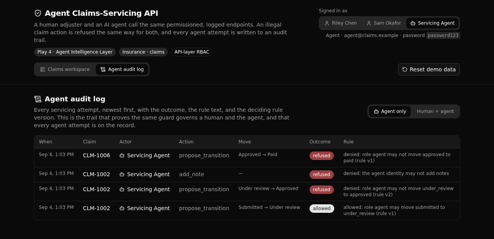

One rule layer, enforced the same for a person and an agent.
A governed insurance claims API where a human adjuster and an AI agent call the same permissioned, logged endpoints. An illegal claim action is refused the same way for both, and every agent attempt is written to an audit trail.

Why a technical evaluator would read this.
The rules that govern a claim live in one API layer. A single function,
enforce_transition, is the only place a claim's status ever changes, and both the
human endpoint and the agent endpoint call it. So a legal move succeeds and an illegal move is
refused with the exact rule version that decided it, whoever asked.
The state machine is data, not code branches. A rule row says which roles may move a claim between two statuses, at a version. The set is versioned, so a policy can tighten over time (v1 let handlers approve, v2 restricts approval to supervisors) while the change stays auditable and the deciding version rides on every decision. Every attempt, allowed or refused, is written to a readable log tagged human or agent.
Every endpoint lives in the claims group, so paths read /api:claims/<name>.
| Verb | Path | What it enforces |
|---|---|---|
| POST | seed/reset | Public. Wipes and repopulates the demo, including a pre-walked audit trail. |
| POST | login | Public. Mints a bearer token, for a human or the agent identity alike. |
| GET | list | Any signed-in identity. Claims with status and assignment. |
| GET | get/{claim_id} | Any signed-in identity. One claim with its notes and audit trail. |
| POST | propose-transition | The human path. Runs the shared guard as the caller. |
| POST | add-note | Role-guarded. The agent identity is refused, and the refusal is logged. |
| GET | actions | The audit log, filterable by actor kind. |
| POST | agent/service-claim | The agent path. Interprets an instruction, then runs the SAME guard. |
React, Vite, Tailwind v4, and shadcn/ui, with paths and types derived from the query defs.
Clone it, deploy it, and read the one rule layer for yourself. You need Node 20.19+ and a free Xano account.
git clone https://github.com/xano-scratch/agent-claims-servicing-api
cd agent-claims-servicing-api
npm install
npx xanots login # one-time browser auth with Xano
npm run xano:deploy # builds the frontend, deploys the backend, prints a live URLOr hand this prompt to your coding agent:
Clone https://github.com/xano-scratch/agent-claims-servicing-api and set it up.
Run npm install, then npx xanots login, then npm run xano:deploy.
Open the printed URL and walk me through the agent audit log.npm run xano:deploy for a
fresh live URL of your own.